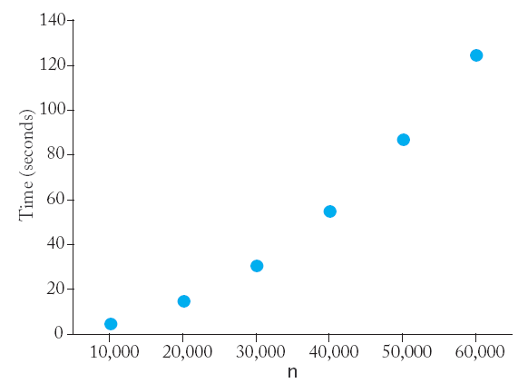
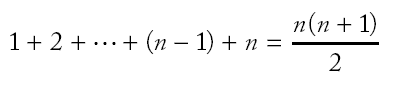
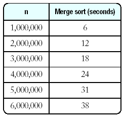
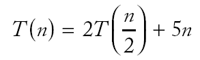

Сортиране и търсене
** Сортиране чрез селекция (пряк избор)
- Алгоритъмът
се състои в следното: на всяка стъпка намираме най-малкия
елемент (от ненаредената част на масива) и го поставяме на
място (чрез размяна) в наредения масив.
- Пример:
- Най-малкият елемент е 5 - поставяме го на
първо място в масива. За да не загубим (изтрием) първия
елемент 11, резменяме (swap) двата елемента.
- Вземаме минимума на останалите 4 елемента a[1]
... a[4]. Той е на правилното място и не разменяме.
- Повтаряме процеса с несортираната част от
масива.
- Продължаваме докато остане само един
"несортиран" елемент.
// selsort.cpp
01: #include <iostream>
02: #include <vector>
03: #include <cstdlib>
04: #include <ctime>
06: using namespace std;
08: /**
09: Swaps two integers.
10: @param x the first integer to swap
11: @param y the second integer to swap
12: */
13: void swap(int& x, int& y)
14: { int temp = x;
16: x = y;
17: y = temp;
18: }
20: /**
21: Gets the position of the smallest element in a vector range.
22: @param a the vector
23: @param from the beginning of the range
24: @param to the beginning of the range
25: @return the position of the smallest element in
26: the range a[from]...a[to]
27: */
28: int min_position(vector<int>& a, int from, int to)
29: { int min_pos = from;
31: int i;
32: for (i = from + 1; i <= to; i++)
33: if (a[i] < a[min_pos]) min_pos = i;
34: return min_pos;
35: }
37: /**
38: Sorts a vector using the selection sort algorithm
39: @param a the vector to sort
40: */
41: void selection_sort(vector<int>& a)
42: { int next; /* the next position to be set to the minimum */
44:
45: for (next = 0; next < a.size() - 1; next++)
46: { /* find the position of the minimum */
48: int min_pos = min_position(a, next, a.size() - 1);
49: if (min_pos != next)
50: swap(a[min_pos], a[next]);
51: }
52: }
54: /**
55: Prints all elements in a vector
56: @param a the vector to print
57: */
58: void print(vector<int> a)
59: { for (int i = 0; i < a.size(); i++)
61: cout << a[i] << " ";
62: cout << "\n";
63: }
65: /**
66: Sets the seed of the random number generator.
67: */
68: void rand_seed()
69: { int seed = static_cast<int>(time(0));
71: srand(seed);
72: }
74: /**
75: Computes a random integer in a range.
76: @param a the bottom of the range
77: @param b the top of the range
78: @return a random integer x, a <= x and x <= b
79: */
80: int rand_int(int a, int b)
81: { return a + rand() % (b - a + 1); }
84:
85: int main()
86: { rand_seed();
88: vector<int> v(20);
89: for (int i = 0; i < v.size(); i++)
90: v[i] = rand_int(1, 100);
91: print(v);
92: selection_sort(v);
93: print(v);
94: return 0;
95: }
** Оценка на сложността на алгоритъма
за пряк избор
- За оценка на сложността (ефективността) на
алгоритъма може просто се изпълни програмата и се измери с помощта на хронометър колко
е
времето за изпълнението.
- Конструкторът по подразбиране
на класа Time инициализира обект с текущото време.
Time now;
- Използваме два обекта от този клас за
измерване на времето за изпълнение на алгоритъма за сортиране.
Time before;
selection_sort(v);
Time after;
cout << "Elapsed time = " << after.seconds_from(before)
<< " seconds\n";
- sorttime.cpp
- Ето примерни резултати за Pentium III
процесор на 750 MHz под Linux.
 |
|
 |
- Всъщност числата може да са различни, но
връзката между числата ще бъде същата. Удвояването на размера
на данните увеличава повече от 2 пъти времето, необходимо за
сортирането им.
n
|
seconds
|
10000
|
1
|
20000
|
4
|
40000
|
15
|
60000
|
32
|
80000
|
57
|
|
|
Резултати за 2.2
GHz Intel Core 2 Duo CPU на Mac OS X.
|
- За да анализираме алгоритъма, ще броим колко
пъти са посетени (използвани) елементите на масива.
- За вектор с n елементи ще трябва да
посетим всичките n от тях за да намерим най-малкия.
След това посещаваме още два елемента за размяната.
- На следващата стъпка посещаваме n - 1
елемента за да намерим най-малкия и още два за размяната.
Разглеждаме най-лошия случай, когато се налага да разменяме
елементи не всяка стъпка.
- На следващата стъпка
посещаваме (n - 2) + 2 елементи.
- Общият брой на посетените елементи е

защото

- Получаваме формула за броя на посещенията
(1/2) n2 + (5/2) n - 3.
- За големи стойности на n двата
последни члена на полинома нямат съществено значение и
ги игнорираме.
|
n
|
(1/2) n2
|
(5/2) n
- 3
|
|
1000
|
500 000
|
2 497
|
|
2000
|
2 000 000
|
4 997
|
- При сравняване на отношението на броя за
различни стойности на n,
коефициентът 1/2 се премахва (съкращава).
- Казваме "Броят на посещенията е от порядък n2"
и използваме означението О-голамо (big-Oh notation):
Броят на посещенията е O(n2).
- Казваме, че пряката селекция е алгоритъм за
сортиране със сложност O(n2)
- квадратичен алгоритъм.
- За алгоритъма за сортиране пряка селекция
удвояването на броя на елементите увеличава времето за
изпълнение 4 пъти.
- Ако за n = 10000 и времето е 4
секунди, сортирането на m = 1 милион елементи ще
отнеме повече от 11 часа!
(m = 100n, tm = 1002tn
= 4.1002 seconds = 4.100.100/3600 > 11 hours!)
** Сортиране чрез сливане
- Нека е даден вектор от 10 цели числа, като
първата и втората половина на вектора вече са сортирани:

- Лесно е да се слеят двете сортирани
половини, като сравняваме елементи от първата и втората
половина и избираме по-малкия елемент:
- Алгоритъмът за сортиране разделя векторът на
все по-малки половинки, сортира всяка от тях и после ги слива.
void merge_sort(vector<int>& a, int from, int to)
{ if (from == to) return;
int mid = (from + to) / 2;
/* sort the first and second half */
merge_sort(a, from, mid);
merge_sort(a, mid + 1, to);
merge(a, from, mid, to);
}
- Процедурата merge слива двете сортирани половинки.
// mergsort.cpp
001: #include <iostream>
002: #include <vector>
003: #include <cstdlib>
004: #include <ctime>
006: using namespace std;
008: /**
009: Merges two adjacent ranges in a vector
010: @param a the vector with the elements to merge
011: @param from the start of the first range
012: @param mid the end of the first range
013: @param to the end of the second range
014: */
015: void merge(vector<int>& a, int from, int mid, int to)
016: { int n = to - from + 1; /* size of the range to be merged */
018: /* merge both halves into a temporary vector b */
019: vector<int> b(n);
020:
021: int i1 = from;
022: /* next element to consider in the first half */
023: int i2 = mid + 1;
024: /* next element to consider in the second half */
025: int j = 0; /* next open position in b */
027: /*
028: As long as neither i1 nor i2 past the end, move the smaller
029: element into b
030: */
031: while (i1 <= mid && i2 <= to)
032: { if (a[i1] < a[i2])
034: { b[j] = a[i1];
036: i1++;
037: }
038: else
039: { b[j] = a[i2];
041: i2++;
042: }
043: j++;
044: }
046: /*
047: Note that only one of the two while loops below is executed
048: */
050: /* Copy any remaining entries of the first half */
051: while (i1 <= mid)
052: { b[j] = a[i1];
054: i1++;
055: j++;
056: }
057: /* Copy any remaining entries of the second half */
058: while (i2 <= to)
059: { b[j] = a[i2];
061: i2++;
062: j++;
063: }
065: /* Copy back from the temporary vector */
066: for (j = 0; j < n; j++) a[from + j] = b[j];
068: }
070: /**
071: Sorts the elements in a range of a vector.
072: @param a the vector with the elements to sort
073: @param from start of the range to sort
074: @param to end of the range to sort
075: */
076: void merge_sort(vector<int>& a, int from, int to)
077: { if (from == to) return;
079: int mid = (from + to) / 2;
080: /* sort the first and the second half */
081: merge_sort(a, from, mid);
082: merge_sort(a, mid + 1, to);
083: merge(a, from, mid, to);
084: }
086: /**
087: Prints all elements in a vector
088: @param a the vector to print
089: */
090: void print(vector<int> a)
091: { for (int i = 0; i < a.size(); i++) cout << a[i] << " ";
094: cout << "\n";
095: }
097: /**
098: Sets the seed of the random number generator.
099: */
100: void rand_seed()
101: { int seed = static_cast<int>(time(0));
103: srand(seed);
104: }
106: /**
107: Computes a random integer in a range.
108: @param a the bottom of the range
109: @param b the top of the range
110: @return a random integer x, a <= x and x <= b
111: */
112: int rand_int(int a, int b)
113: { return a + rand() % (b - a + 1); }
116:
117: int main()
118: { rand_seed();
120: vector<int> v(20);
121: for (int i = 0; i < v.size(); i++)
122: v[i] = rand_int(1, 100);
123: print(v);
124: merge_sort(v, 0, v.size() - 1);
125: print(v);
126: return 0;
127: }
** Анализ на ефективността на
алгоритъма за сортиране чрез сливане
- mergetime.cpp
- Въпреки, че алгоритъмът е по-сложен, той
работи по-бързо от пряката селекция.
|  |
|
 |
- Графиката няма параболична форма - изглежда,
че времето за изпълнение е почти линейна функция на n
(броя на елементите на вектора).
-
n
|
seconds
|
200000
|
1
|
400000
|
2
|
800000
|
4
|
1600000
|
8
|
| 3200000 |
18
|
- Отново броим посещенията на елементите на
вектора.
- Разглеждаме процеса на сливане: За вектор
с n елементи,
- трябва да посетим първите два елемента от
двете части за да ги сравним (2 посещения),
- трябва да сорираме по-малкия елемент в
новия сортиран вектор (1 посещение),
- трябва да копираме обратно сортирания
вектор в оригиналния (2 посещения).
- Така за процеса сливане трябват 5n
посещения.
- За анализ на целия алгоритъм, нека с T(n)
означим броя на посещенията, необходими за сортиране на вектор
с n елемента по метода сортиране чрез сливане.
- За опростяване на пресмятанията предполагаме,
че n е
степен на двойката, т.е. n = 2m.
- Тъй като за сортиране на половин вектор са
необходими T(n/2) посещения, имаме:

- По същия начин получаваме:

- Комбинирайки двете формули, получаваме:
- Повторението на процеса води до:
- Накрая се получава формулата

- Тъй като предположихме n = 2m
имаме:

- За да определим порядъка на нарастване,
изпускаме членовете от по-нисък ред и коефициента.
- Тъй като смяна на основата на логаритъма
променя стойността с константен множител, при оценката може да
изпуснем основата на логаритъма.
- Следователно сортиране чрез сливане е алгоритъм
със сложност O(n log n).
- Как да сравним O(n2)
с O(n log n)?
- С O(n2) алгоритъм
сортирането на вектор с 106 елемента е 1002
= 10 000 пъти по-бавно отколкото на вектор с 104
елементи.
- С O(n log n) алгоритъм
сортирането на вектор с 106 елемента е 100.log100
= 150 пъти по-бавно отколкото на вектор с 104
елементи, защото

- Ако за 4 секунди се сортират 10 000 елементи
и с двата алгоритъма (сливането е по-бързо, разбира се) тогава
- ще отнеме 10 минути за сортиране на 106
елементи чрез сливане и
- ще отнеме 11 часа за сортиране на 106
елементи по метода на пряката селекция.
** Линейно търсене
- Ако искаме да намерим число в редица от
стойности, които са в произволен ред, трябва да разгледаме
всички елементи, докато намерим търсеното число или докато
стигнем до края на редицата.
- Този алгоритъм се нарича линейно или
последователно търсене.
- Нищо не може да се направи за ускоряване на
процеса, затова алгоритъмът има сложност O(n).
- Процедурата връща -1, ако числото не е
намерено.
// lsearch.cpp
01: #include <iostream>
02: #include <vector>
03: #include <cstdlib>
04: #include <ctime>
06: using namespace std;
08: /**
09: Finds an element in a vector
10: @param v the vector with the elements to search
11: @param a the value to search for
12: @return the index of the first match, or -1 if not found
13: */
14: int linear_search(vector<int> v, int a)
15: { for (int i = 0; i < v.size(); i++)
17: if (v[i] == a) return i;
21: return -1;
22: }
24: /**
25: Prints all elements in a vector
26: @param a the vector to print
27: */
28: void print(vector<int> a)
29: { for (int i = 0; i < a.size(); i++)
31: cout << a[i] << " ";
32: cout << "\n";
33: }
35: /**
36: Sets the seed of the random number generator.
37: */
38: void rand_seed()
39: { int seed = static_cast<int>(time(0));
41: srand(seed);
42: }
44: /**
45: Computes a random integer in a range.
46: @param a the bottom of the range
47: @param b the top of the range
48: @return a random integer x, a <= x and x <= b
49: */
50: int rand_int(int a, int b)
51: { return a + rand() % (b - a + 1); }
54:
55: int main()
56: { rand_seed();
58: vector<int> v(20);
59: for (int i = 0; i < v.size(); i++)
60: v[i] = rand_int(1, 100);
61: print(v);
62: cout << "Enter number to search for: ";
63: int n;
64: cin >> n;
65: int j = linear_search(v, n);
66: cout << "Found in position " << j << "\n";
67: return 0;
68: }
** Двоично търсене
- Сега търсим елемент в сортирана редица
(наредени по големина елементи).
- Освен с линейно търсене, задачата може да се
реши с двоично търсене.
- Търсенето се нарича двоично, защото областта
на търсене се намалява наполовина на всяка стъпка.
- Този алгоритъм (делене наполовина) работи,
само защото редицата е предварително сортирана.
- Пример: Търсим числото 123 във вектора:
|
v[0]
|
v[1]
|
v[2]
|
v[3]
|
v[4]
|
v[5]
|
v[6]
|
v[7]
|
|
14
|
43
|
76
|
100
|
115
|
290
|
400
|
511
|
- Последният елемент от първата половина на
вектора v[3], е 100. 100 < 123, което
означава, че трябва да продължим търсенето във втората
половина на вектора.
|
v[4]
|
v[5]
|
v[6]
|
v[7]
|
|
115
|
290
|
400
|
511
|
- Последният елемент от
първата половина на вектора v[5], е 290. 290
> 123, което означава, че трябва да продължим търсенето в
първата половина.
- Тъй като има само един елемент за сравневие v[5], който
не е 123, търсенето завършва неуспешно -
няма елемент със стойност 123 във вектора.
// bsearch.cpp
01: #include <iostream>
02: #include <vector>
03: #include <cstdlib>
04: #include <ctime>
06: using namespace std;
08: /**
09: Finds an element in a sorted vector.
10: @param v the sorted vector with the elements to search
11: @param from the start of the range to search
12: @param to the end of the range to search
13: @param a the value to search for
14: @return the index of the first match, or -1 if not found
15: */
16: int binary_search(vector<int> v, int from, int to, int a)
17: { if (from > to) return -1;
20: int mid = (from + to) / 2;
21: int diff = v[mid] - a;
22: if (diff == 0) /* v[mid] == a */
23: return mid;
24: else if (diff < 0) /* v[mid] < a */
25: return binary_search(v, mid + 1, to, a);
26: else
27: return binary_search(v, from, mid - 1, a);
28: }
30: /**
31: Prints all elements in a vector
32: @param a the vector to print
33: */
34: void print(vector<int> a)
35: { for (int i = 0; i < a.size(); i++)
37: cout << a[i] << " ";
38: cout << "\n";
39: }
41: /**
42: Sets the seed of the random number generator.
43: */
44: void rand_seed()
45: { int seed = static_cast<int>(time(0));
47: srand(seed);
48: }
50: /**
51: Computes a random integer in a range.
52: @param a the bottom of the range
53: @param b the top of the range
54: @return a random integer x, a <= x and x <= b
55: */
56: int rand_int(int a, int b)
57: { return a + rand() % (b - a + 1); }
60:
61: int main()
62: { rand_seed();
64: vector<int> v(20);
65: v[0] = 1;
66: for (int i = 1; i < v.size(); i++)
67: v[i] = v[i - 1] + rand_int(1, 10);
68:
69: print(v);
70: cout << "Enter number to search for: ";
71: int n;
72: cin >> n;
73: int j = binary_search(v, 0, v.size() - 1, n);
74: cout << "Found in position " << j << "\n";
75: return 0;
76: }
- Двоичното търсене има сложност O(log
n).
- Пример: Нека n = 100, след всяка
стъпка дължината на интервала за търсене намалява наполовина
до 50, 25, 12, 6, 3 и 1.
- След 7 сравнения сме решили задачата.
- log2100 е приблизително
6.64386, 27 = 128.
- Очевидно двоичното търсене е по-бърз
алгоритъм от линейното търсене.
- Дали е разумно най-напред да сортираме данните
и после да приложем двоично търсене?
- O(n) търсене е по-бързо от O(n
log n) сортиране, затова не си струва да сортираме
за едно търсене.
- Сортирането има смисъл, ако трябва да
направим много търсения в един и същи вектор.